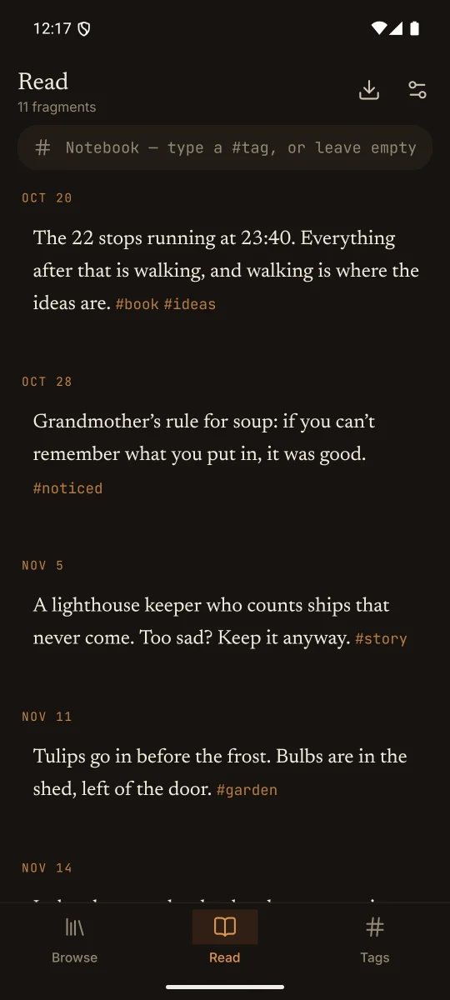
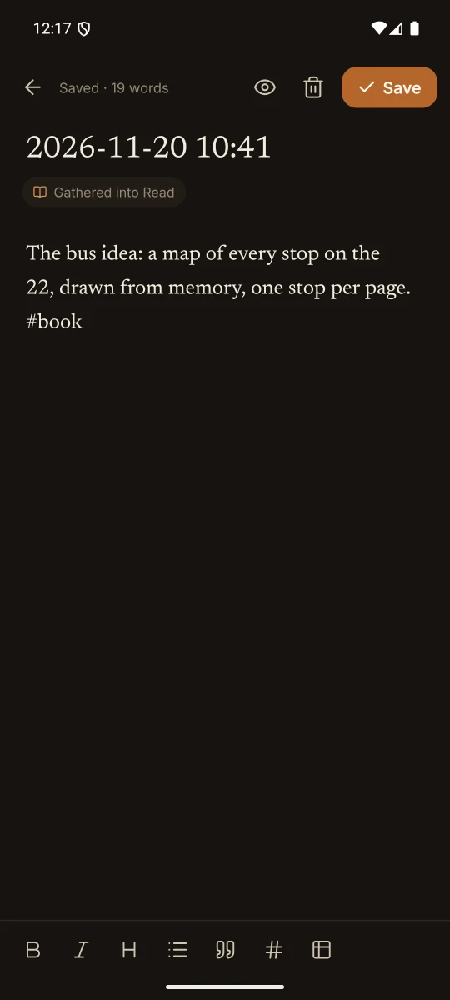
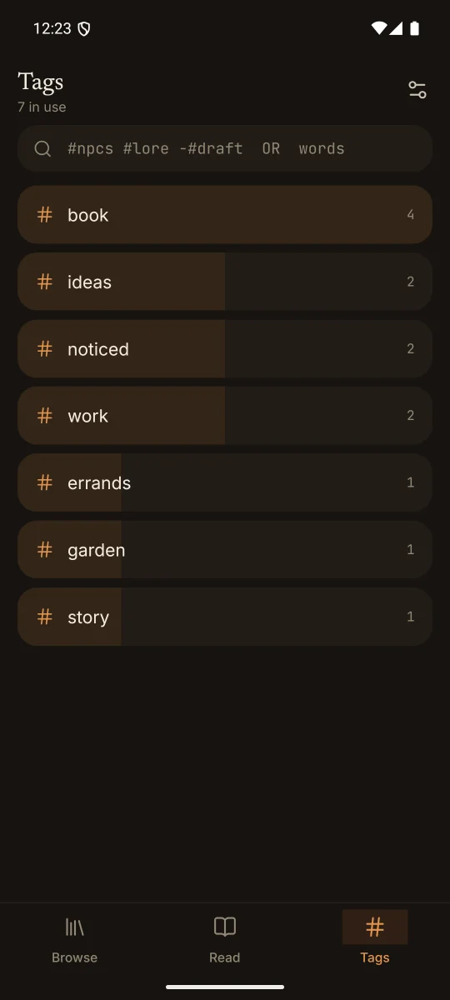
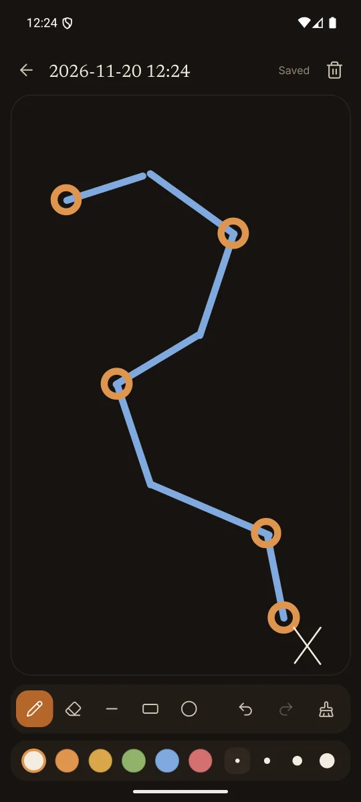

grail
$ grail --about
a notebook for half-formed ideas. android, windows, linux. v1.1.1
## what
You write things down the moment they show up: on the bus, half asleep, in the middle of something else. Every note gets the date and time as its title, so you never have to name it or file it. Later, grail reads your notes back to you, oldest first, as one continuous text. Ideas that keep coming back start to stand out.
That's the "grail method": one book for everything, kept messy, read back often. Leonardo, Darwin and centuries of commonplace books did the same with paper. It started from a video by Perry Daniels.
## screenshots







## how it works
There is no database. A note is a markdown file with a small header, in a folder you pick:
$ ls ~/Documents/grail | tail -5 1795152180000.md 1795164060000.md grail-review.json grail-settings.json grail-views.json $ cat 1795164060000.md --- id: '1795164060000' type: text title: '2026-11-20 10:41' tags: [book] created: 1795164060000 updated: 1795164060000 --- The bus idea: a map of every stop on the 22, drawn from memory, one stop per page. #book
- Read gathers every note whose title is a date and time, oldest first. Move, take out or delete fragments right there.
- #tags anywhere in the text. Each tag is its own notebook with its own Read.
- delete adds
#deletedto the note. It disappears everywhere until you search for#deleted. - other files: plain markdown from other apps shows up too, titled by its file name.
- network: none, except link previews you ask for. No account, no server, no analytics, no ads.
## download
| platform | file | needs |
|---|---|---|
| android | grail-1.1.1-47.apk | android 7+ |
| windows | grail-1.1.1-47-windows-setup.exe or .msi | windows 10/11 |
| linux | grail-1.1.1-47-linux-amd64.deb or .AppImage | x86_64 |
! the windows installer isn't code-signed yet. windows will say "Windows protected your PC"; click More info, then Run anyway.
## changelog
$ git log --oneline --releases 1.1.1 2026-11-18 editor button says Save; desktop stops serving an old version after updates 1.1.0 2026-11-18 welcome + tour; pick the notes folder; #deleted; desktop keyboard shortcuts 1.0.1 2026-11-17 new drawing canvas; android app about a third smaller 1.0.0 2026-11-16 first release
## faq
- does it sync between phone and computer?
- not by itself. put the notes folder inside something that syncs (OneDrive, Dropbox, Google Drive for desktop, Syncthing) and point grail at it.
- what happens to my notes if grail goes away?
- nothing. they're markdown files. open them in any editor.
- is it free?
- yes, and open source (GPL-3.0). no account, no ads, no paid tier.
- found a bug?
- open an issue or mail hello@grailnotebook.com.
-- grail is free software (GPL-3.0) by MPKoutsoukos, made in Greece. source · privacy · hello@grailnotebook.com · © 2026